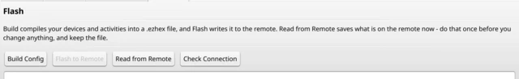
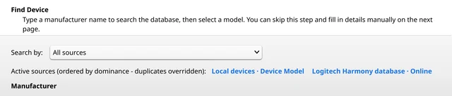
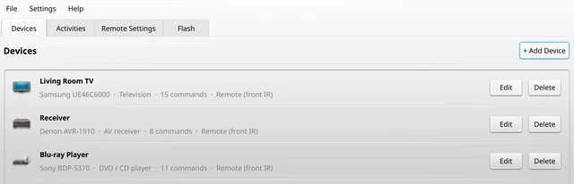
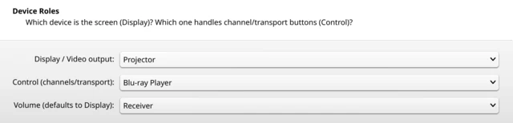
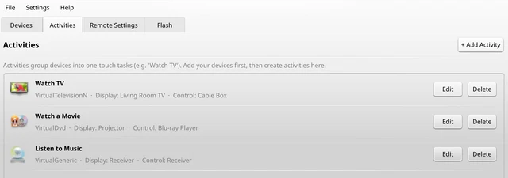

Setting up your remote
Seven steps from a remote you can't change to one that does exactly what you want. Most people are done in about half an hour.
What you'll need
- Your Harmony remote and its USB cable
- A computer with Afterglow on it
- The remotes that came with your TV and other equipment, if you still have them. They're handy for teaching Afterglow a button it doesn't know.
-
Start Afterglow and plug in your remote
The first time you start it, Afterglow offers to set up the connection to your remote. Say yes: Windows asks for your permission once, and Linux asks for your password. On a Mac there's nothing to set up.
Give the remote a few seconds after plugging it in. It isn't ready straight away.
-
Save what's on it now
On the tab, click and save the file. It's a copy of the remote exactly as it is today: you'll use it in the next step, and it lets you go back if you ever want to.

-
Bring in your current setup
Choose and pick the file you just saved. Your devices and activities appear, ready to change, so you don't start from nothing.
Starting fresh instead? Skip this step.
-
Add your devices
On the tab, click and type the maker of your TV, amplifier or player. Pick the model and Afterglow fills in its buttons.

Can't find it? Point the device's own remote at your Harmony and use to teach it the buttons one by one.

-
Make your activities
An activity is one button for one thing you do, like “Watch a Movie”. On the tab, click , give it a name, then tell Afterglow which device shows the picture, which one plays it, and which one handles the volume.

Afterglow works out the rest: what to turn on, in what order, and which button goes where. You can still change any button afterwards with .

-
Send it to your remote
Back on the tab, click , then . Leave the remote plugged in until it says it's done. It restarts with your new setup.
-
Try it out
Unplug the remote and press one of your activities. If a device doesn't turn on or a button does the wrong thing, change it in Afterglow and send it again. You can do that as often as you like.
Good to know
- Your projects are saved in .
- The tab has the clock, backlight and key beep.
- Helping a friend? makes one file they can open with Afterglow.
If something goes wrong
- The remote isn't found
- Wait a few seconds, then unplug it and plug it back in. On Windows or Linux, also check
- The remote doesn't like the new setup
- Put the file from step 2 back with and tell us what happened on Discord.
- Not sure about something?
- Ask on Discord before you try it. We're happy to help.